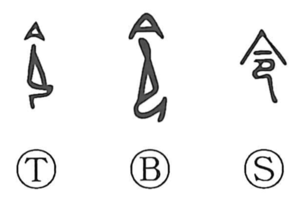

令

Kun: mikotonori, iitsukeru, yoi, shimu | On: rei, ryo
order ・ command ・ decree ・ imperial edict ・ good
Explanation
令 pictures a kneeling person wearing a deep ceremonial cap. The figure receives the divine message in a posture of reverent attention. 令 first names the oracle or revelation given by the god.
The authority of that message extends to commands issued by a ruler or superior. 令 therefore means an edict, instruction, or order, and can also express causing someone to act. Following the divine will gives the further sense of what is good, proper, or auspicious.
Early inscriptions use 令 for both this word and the word later written 命. Adding a prayer vessel produced 命 as a distinct graph. The kneeling recipient remains the original image behind both divine direction and human command.